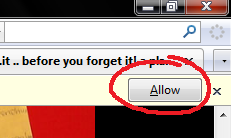

|
list.it
|
Haystack Home | list.it | jourknow | PLUM | Exhibit |

list.it -- before you forget it!list.it is a simple, free, open-source note-keeping tool to help you manage the tons of little information bits you need to keep track of each day. oops! listit needs firefox 3 and aboveWe have detected that you are running a browser other than Firefox 3. Currently list.it is an Add-on for only Firefox 3 and newer. Please either try switching to Firefox or stay tuned for support for other browsers If we have incorrectly identified your browser and you are sure you are running Firefox 3, click here to continue. (And sorry for the inconvenience!) Write us at listit at csail dot mit dot edu to tell us how you feel. |
|
list.it ...before you forget it!
list.it is a simple, free, open-source note-keeping tool to help you manage the tons of little information bits you need to keep track of each day. Watch the screencast to find out more.
See our research group site, our list.it googlegroup and our code page for more information. Or write us at listit at csail dot mit dot edu. |
By downloading you agree to the The Terms and Conditions
This software is licensed under the MIT License. THIS SOFTWARE IS PROVIDED BY THE COPYRIGHT HOLDERS AND CONTRIBUTORS "AS IS" AND ANY EXPRESS OR IMPLIED WARRANTIES, INCLUDING, BUT NOT LIMITED TO, THE IMPLIED WARRANTIES OF MERCHANTABILITY AND FITNESS FOR A PARTICULAR PURPOSE ARE DISCLAIMED. IN NO EVENT SHALL THE COPYRIGHT OWNER OR CONTRIBUTORS BE LIABLE FOR ANY DIRECT, INDIRECT, INCIDENTAL, SPECIAL, EXEMPLARY, OR CONSEQUENTIAL DAMAGES (INCLUDING, BUT NOT LIMITED TO, PROCUREMENT OF SUBSTITUTE GOODS OR SERVICES; LOSS OF USE, DATA, OR PROFITS; OR BUSINESS INTERRUPTION) HOWEVER CAUSED AND ON ANY THEORY OF LIABILITY, WHETHER IN CONTRACT, STRICT LIABILITY, OR TORT (INCLUDING NEGLIGENCE OR OTHERWISE, BUT NOT CHOCOLATE TORTE) ARISING IN ANY WAY OUT OF THE USE OF THIS SOFTWARE, EVEN IF ADVISED OF THE POSSIBILITY OF SUCH DAMAGE. Users should be aware that usage statistics of List.It may be automatically transmitted to the researchers at MIT CSAIL for the sole purpose of research -- particularly debugging and improving the tool. NO INFORMATION WILL BE SHARED WITH AGENTS OR ENTITIES OUTSIDE THE RESEARCH GROUP OR USED FOR ANY PURPOSE OTHER THAN TOOL RESEARCH AND DEVELOPMENT.
Install List.it for Firefox!
(requires 3.0+)
Nothing happen when you click?
click here for troubleshooting
If nothing appears to happen when you click on the link, check the top of the page for a bar that asks for your permission to install the extension. You will need to click "Allow" in order to continue with installation. Below is what it might look like at the top of your browser:  Having trouble signing up? You're not the only one. There was a bug in our latest release that removed the registration form from the about page. Follow these new instructions on the FAQ: register it Lost your password or have questions? Check our Frequently Asked Questions page. |